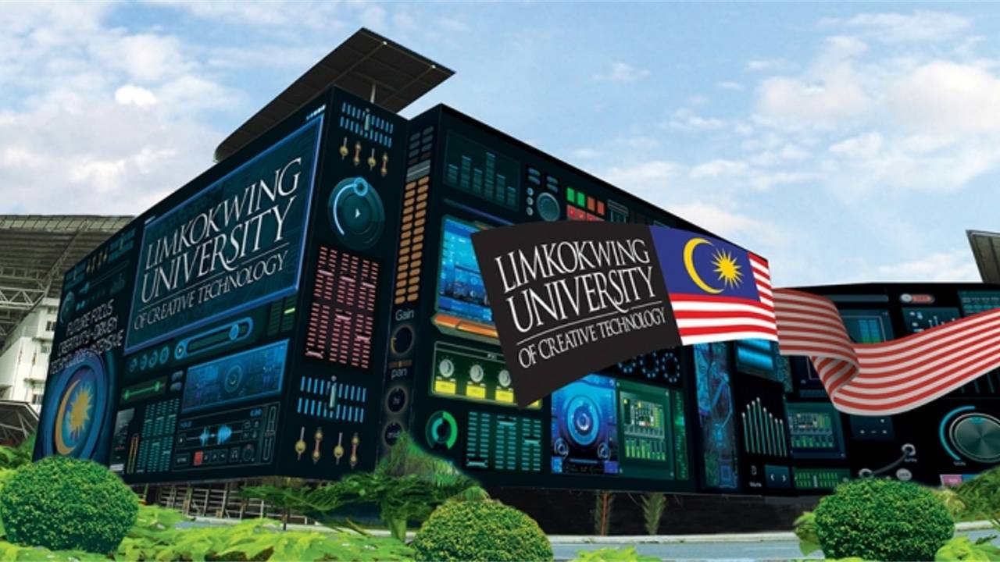
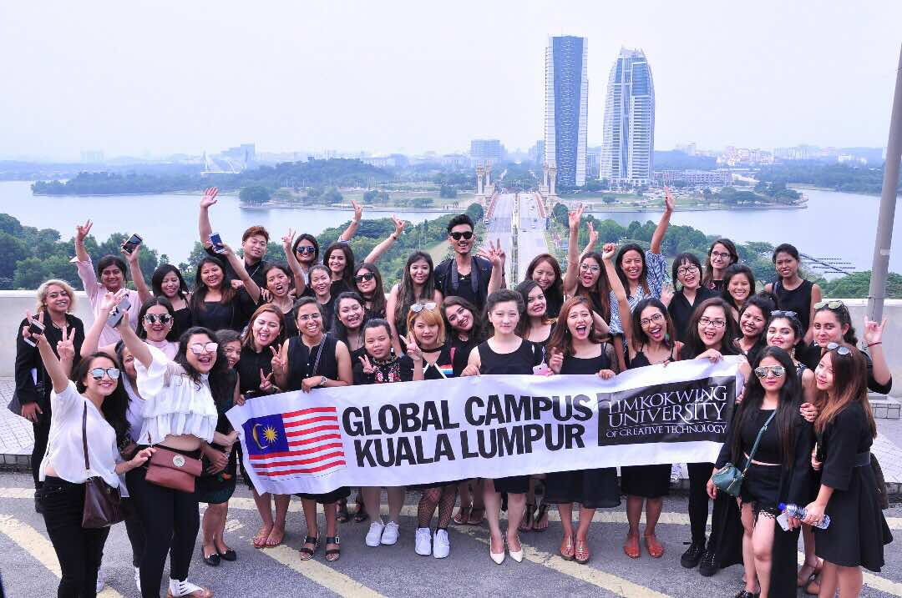
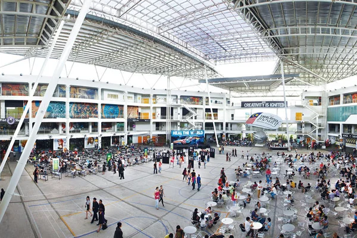
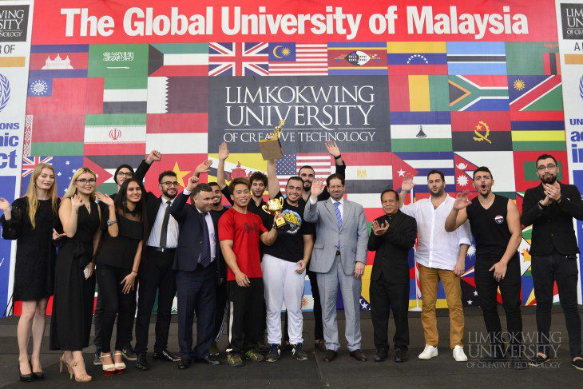
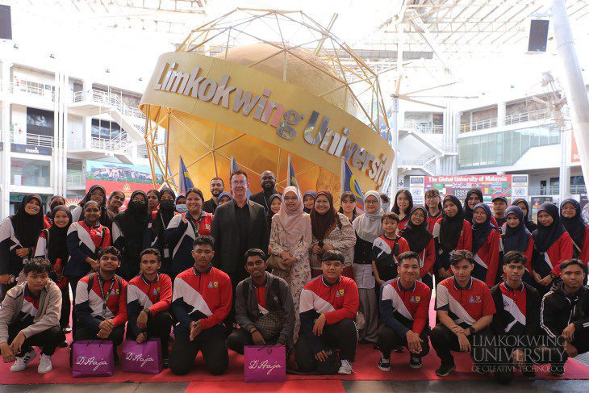
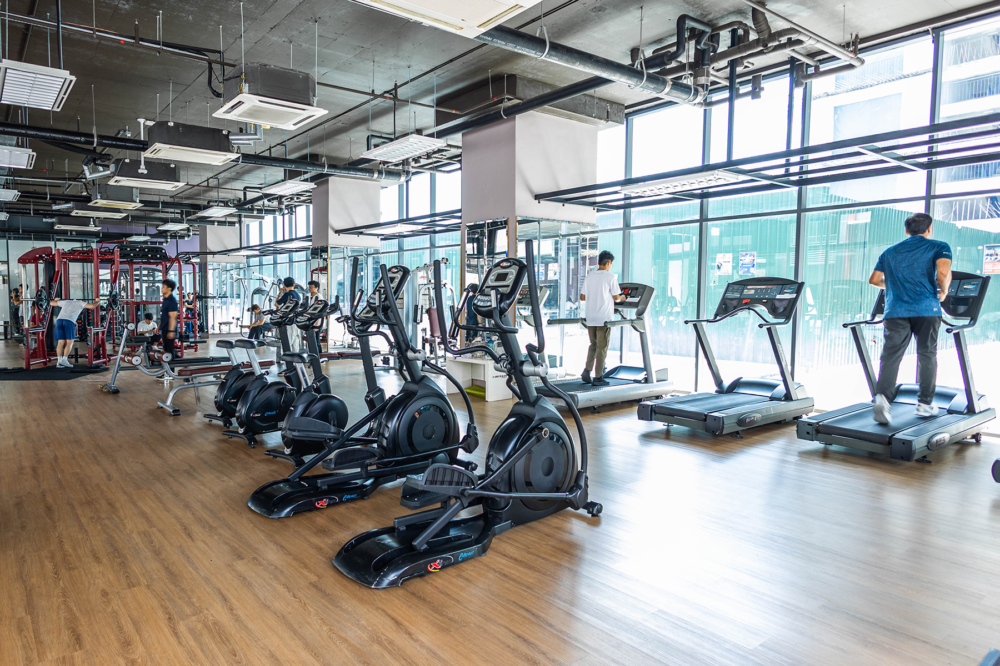

University overview
About Limkokwing University of Creative Technology
Founded in 1991 by the late Tan Sri Dato' Sri Paduka Dr. Lim Kok Wing, Limkokwing University of Creative Technology (LUCT) is an internationally recognized pioneer in creative, innovative, and industry-driven education. Headquartered in Cyberjaya, Malaysia's technological heartland, the university has established global learning hubs across Asia, Africa, and Europe.
Limkokwing University is world-famous for its distinctive jet-black architectural aesthetic, avant-garde design philosophy, and its revolutionary "Indusity" learning model—which directly integrates real industry projects into academic coursework. Home to a vibrant international community of students from over 150 nations, the campus offers an unmatched environment where art, multimedia, technology, and global business converge.







International students
Study at Limkokwing University of Creative Technology as an international student
Compare Limkokwing University of Creative Technology courses, campuses, fees and entry requirements for your intended intake.
Programmes and tuition
Limkokwing University of Creative Technology Limkokwing courses and fees for international students
| No | Courses | Duration | Resource Fees (RM) | Full Fees (RM) |
|---|---|---|---|---|
| 1 | Foundation in Design (Malaysian Students) (82/010/3/0264)(A-3488) | 1 year | 2,000 | 12,500 |
| 2 | Foundation in Design (International Students) (R2/010/3/0264)(A-3488) | 1 year | 2,000 | 16,500 |
| 3 | Foundation in Engineering (R1/010/3/0533)(FA-05683) | 1 year | 2,000 | 31,500 |
| 4 | Foundation in Business (R2/010/3/0321)(A-6061) | 1 year | 2,000 | 10,000 |
Schedule remarks:
Malaysian Students Initial Fees:
- Registration fee: RM500
- Wings of Creativity Reference Book (one time): RM90
International Students Initial Fees:
- Registration fee: RM1,000
- Student Visa Application fee (EMGS): RM2,400, non-refundable (inclusive of EMGS registration fee for ikad)
- International Student Administrative Fee (one time, varies by programme): RM5,000
- Limkokwing Book (one time): RM90
- Accommodation Fees: 2 months rental in advance (non-refundable) and 1 month deposit.
Note: Fees quoted are correct at the time of printing and subject to change without prior notice. All fees are quoted in Malaysian Ringgit (RM).
| No | Courses | Duration | Resource Fees (RM) | Full Fees (RM) |
|---|---|---|---|---|
| 1 | Diploma in Animation & Multimedia Design (R2/214/4/0111)(A-10564) | 3 years | 6,000 | 55,200 |
| 2 | Diploma in Information Technology (R2/481/4/10642)(A-6567) | 2.5 years | 2,000 | 45,600 |
| 3 | Bachelor of Arts (Hons) in Creative Multimedia (R2/213/6/0349)(A-6186) | 3 years | 6,000 | 58,650 |
| 4 | Bachelor of Science (Hons) in Software Engineering with Multimedia (R2/481/6/0511)(A-5373) | 3 years | 6,000 | 46,000 |
| 5 | Bachelor of Science (Hons) in Information Technology (R2/481/6/0512)(A-5371) | 3 years | 6,000 | 46,000 |
| 6 | Bachelor of Arts (Hons) in Games Design (R2/213/6/0269)(A-11059) | 3 years | 6,000 | 58,650 |
| 7 | Bachelor of Arts (Hons) in Animation (R2/213/6/0250)(A4-6166) | 3 years | 6,000 | 58,650 |
| 8 | Bachelor in Multimedia (Honours) (N/0211/6/0031) (MQA/PA16725) | 3.5 years | 6,000 | 91,480 |
Schedule remarks:
Malaysian Students Initial Fees:
- Registration fee: RM500
- Wings of Creativity Reference Book (one time): RM90
International Students Initial Fees:
- Registration fee: RM1,000
- Student Visa Application fee (EMGS): RM2,400, non-refundable (inclusive of EMGS registration fee for ikad)
- International Student Administrative Fee (one time, varies by programme): RM5,000
- Limkokwing Book (one time): RM90
- Accommodation Fees: 2 months rental in advance (non-refundable) and 1 month deposit.
Note: Fees quoted are correct at the time of printing and subject to change without prior notice. All fees are quoted in Malaysian Ringgit (RM).
| No | Courses | Duration | Resource Fees (RM) | Full Fees (RM) |
|---|---|---|---|---|
| 1 | Bachelor of Science (Hons) of Construction Management (R2/526/6/0033)(A-7669) | 3 years | 6,000 | 51,000 |
| 2 | Bachelor of Arts in Interior Architecture (R2/581/6/0053)(A-3760) | 3.5 years | 6,000 | 58,650 |
Schedule remarks:
Malaysian Students Initial Fees:
- Registration fee: RM500
- Wings of Creativity Reference Book (one time): RM90
International Students Initial Fees:
- Registration fee: RM1,000
- Student Visa Application fee (EMGS): RM2,400, non-refundable (inclusive of EMGS registration fee for ikad)
- International Student Administrative Fee (one time, varies by programme): RM5,000
- Limkokwing Book (one time): RM90
- Accommodation Fees: 2 months rental in advance (non-refundable) and 1 month deposit.
Note: Fees quoted are correct at the time of printing and subject to change without prior notice. All fees are quoted in Malaysian Ringgit (RM).
| No | Courses | Duration | Resource Fees (RM) | Full Fees (RM) |
|---|---|---|---|---|
| 1 | Diploma in Graphic Design Technology (R2/214/4/0104)(A-10222) | 3 years | 6,000 | 51,500 |
| 2 | Bachelor of Arts (Hons) in Industrial Design (R3/214/6/0021) 4-6164) | 3 years | 6,000 | 58,650 |
| 3 | Bachelor of Design (Hons) in Professional Design (Visual Communication) (R2/213/6/0123)(A-3759) | 3 years | 6,000 | 58,650 |
| 4 | Bachelor of Arts (Honours) in Fashion Design (R/214/6/0124)(A-3997) | 3 years | 6,000 | 70,320 |
| 5 | Bachelor of Arts (Hons) in Fashion & Retailing (R3/214/4/0020)(A-6401) | 3 years | 6,000 | 58,650 |
Schedule remarks:
Malaysian Students Initial Fees:
- Registration fee: RM500
- Wings of Creativity Reference Book (one time): RM90
International Students Initial Fees:
- Registration fee: RM1,000
- Student Visa Application fee (EMGS): RM2,400, non-refundable (inclusive of EMGS registration fee for ikad)
- International Student Administrative Fee (one time, varies by programme): RM5,000
- Limkokwing Book (one time): RM90
- Accommodation Fees: 2 months rental in advance (non-refundable) and 1 month deposit.
Note: Fees quoted are correct at the time of printing and subject to change without prior notice. All fees are quoted in Malaysian Ringgit (RM).
| No | Courses | Duration | Resource Fees (RM) | Full Fees (RM) |
|---|---|---|---|---|
| 1 | Diploma in Multimedia, Advertising & Broadcasting (R3/321/4/0199)(FA 2535) | 3 years | 6,000 | 50,600 |
| 2 | BA (Hons) in Broadcasting & Journalism (R3/321/6/0036)(A-6187) | 3 years | 6,000 | 58,650 |
| 3 | Bachelor of Arts (Hons) in Professional Communication (R2/321/6/0156)(A-5365) | 3 years | 6,000 | 58,650 |
| 4 | Bachelor of Business (Hons) in International Business (R2/340/6/0432)(A 5368) | 3 years | 6,000 | 46,000 |
| 5 | Bachelor of Business (Hons) in Accounting (R2/344/6/0306)(A-5367) | 3 years | 6,000 | 46,000 |
| 6 | Bachelor of Business Administration (Hons) (R2/345/6/0584)(A-5366) | 3 years | 6,000 | 46,000 |
| 7 | Bachelor of Arts (Hons) in Digital Film & Television (R3/213/6/0033)(A-6165) | 3 years | 6,000 | 58,650 |
Schedule remarks:
Malaysian Students Initial Fees:
- Registration fee: RM500
- Wings of Creativity Reference Book (one time): RM90
International Students Initial Fees:
- Registration fee: RM1,000
- Student Visa Application fee (EMGS): RM2,400, non-refundable (inclusive of EMGS registration fee for ikad)
- International Student Administrative Fee (one time, varies by programme): RM5,000
- Limkokwing Book (one time): RM90
- Accommodation Fees: 2 months rental in advance (non-refundable) and 1 month deposit.
Note: Fees quoted are correct at the time of printing and subject to change without prior notice. All fees are quoted in Malaysian Ringgit (RM).
| No | Courses | Duration | Resource Fees (RM) | Full Fees (RM) |
|---|---|---|---|---|
| 1 | MBA in Project Management (R2/0414/7/0939) (FA14355) | 1.5 years | 3,000 | 27,000 |
| 2 | Master of Arts in Fashion and Brand Management (R/342/7/0136)(MQA/FA 4745) | 2 years | 4,000 | 42,000 |
| 3 | Master of E-Commerce (N/0415/7/0003) (MQA/PA16724) | 1.5 years | 3,000 | 34,000 |
| 4 | Master of Business Administration in General Management (R/340/7/0003) (MQA/PA16724) | 1.5 years | 3,000 | 39,999 |
| 5 | Doctor of Philosophy (PHD) Information System (R2/480/8/0025)(MQA/A10543) | 3 years | 3,000 | 38,000 |
| 6 | Doctor of Philosophy (PhD) Management (Local) (R2/340/8/0506)(MQA/FA 14357) | 3 years | 6,000 | 15,400 |
| 7 | Doctor of Philosophy (PhD) Management (International) (R2/340/8/0506)(MQA/FA 14357) | 3 years | 6,000 | 30,000 |
Schedule remarks:
Malaysian Students Initial Fees:
- Registration fee: RM500
- Wings of Creativity Reference Book (one time): RM90
International Students Initial Fees:
- Registration fee: RM1,000
- Student Visa Application fee (EMGS): RM2,400, non-refundable (inclusive of EMGS registration fee for ikad)
- International Student Administrative Fee (one time, varies by programme): RM5,000
- Limkokwing Book (one time): RM90
- Accommodation Fees: 2 months rental in advance (non-refundable) and 1 month deposit.
Note: Fees quoted are correct at the time of printing and subject to change without prior notice. All fees are quoted in Malaysian Ringgit (RM).
Download fee schedule (PDF)
Stored fee document for Limkokwing University of Creative Technology. Check the printed validity and terms.
Limkokwing rankings: QS World, Asia & Malaysia
Verified . Each figure below names its ranking edition.
- QS World 2027
- Not listed
- QS Asia 2026
- #951–1000
- Malaysia · QS World 2027
- Not listed
“Not listed” refers to the named QS table. “Not verified” means we could not confirm a position for that edition; it does not establish that the institution is unaccredited.
Malaysia positions are calculated among the 32 institutions listed by QS under Malaysia in its World 2027 table. This is not a separate government ranking. An = sign marks a tie. Institutions in the same world-rank band share a national position range because their exact order is not published.
QS World and QS Asia use different methods. Overall university positions do not establish the ranking of a particular BBA, IT, MBA or other program.
Explore the campus
Campus gallery
Questions and answers
Frequently Asked Questions About Limkokwing University of Creative Technology Limkokwing
View ranking sources
QS World University Rankings 2027 - official results spreadsheet (v1.1) · QS World University Rankings 2027 - release corrections · Limkokwing University of Creative Technology - QS profile
What is the QS World ranking of Limkokwing University of Creative Technology in 2027?
Limkokwing has no institution entry in the published QS World University Rankings 2027 table.
Sources: QS World University Rankings 2027 - official results spreadsheet (v1.1) · QS World University Rankings 2027 - release corrections
What is the QS Asia ranking of Limkokwing University of Creative Technology in 2026?
Limkokwing is ranked #951–1000 in QS Asia University Rankings 2026.
Sources: Limkokwing University of Creative Technology - QS profile
What is the ranking of Limkokwing University of Creative Technology in Malaysia?
Limkokwing has no separate Malaysia position in the QS World 2027 table because it has no institution entry listed under Malaysia. This is a position within the QS World table, not a separate government ranking or a QS Asia position.
Sources: QS World University Rankings 2027 - official results spreadsheet (v1.1) · QS World University Rankings 2027 - release corrections
Do QS Stars, SETARA or partner rankings give Limkokwing University of Creative Technology an overall QS rank?
QS Stars and SETARA are ratings, not numerical positions in a QS league table. A subject ranking applies to that subject, and a partner university rank belongs to the named partner. Check the institution, ranking system and edition before comparing.
Sources: QS Stars rating system
What are Limkokwing's tuition fees for international students?
Find your program and campus in the fee chart on this page, then read the relevant student category, fee columns and remarks. Different programs and fee periods cannot be combined into one reliable tuition price. Amounts not shown need an intake-specific quotation.
What are Limkokwing's tuition fees for Bangladeshi students?
Bangladeshi applicants should check the international-student rate for their program and intake. This page does not establish a separate Bangladesh-only tuition rate or guarantee eligibility for a discount. Check nationality-specific charges, deposits, visa costs and scholarship conditions in the schedule and your written offer.
Does the Limkokwing fee chart show fees per semester or per year?
Use the exact period printed in each column. A first-year payment, fee per semester and full-program total describe different costs. Where a semester or annual breakdown is absent, request a payment schedule; dividing a program total can give the wrong instalment amount.
Where can I find the official Limkokwing fee chart?
The download links on this page open the stored fee documents. One-Step is a student guidance website. Confirm the document's edition, campus, student category and validity with the university before accepting an offer or paying. The university's current written fee schedule and offer determine the amount payable.
Which year do the Limkokwing fees apply to?
Use any effective dates and intake restrictions stated in the fee documents and course remarks. A single validity year has not been confirmed for every table on this page. A recent page update does not mean all underlying fees are for the current year.
Does Limkokwing offer scholarships for international students?
Check any scholarship, adjusted tuition or discount columns alongside their conditions. A listed reduction is not an automatic award for every international or Bangladeshi applicant. Ask for the scholarship name, eligibility, application deadline, renewal conditions and final payable fee in writing.